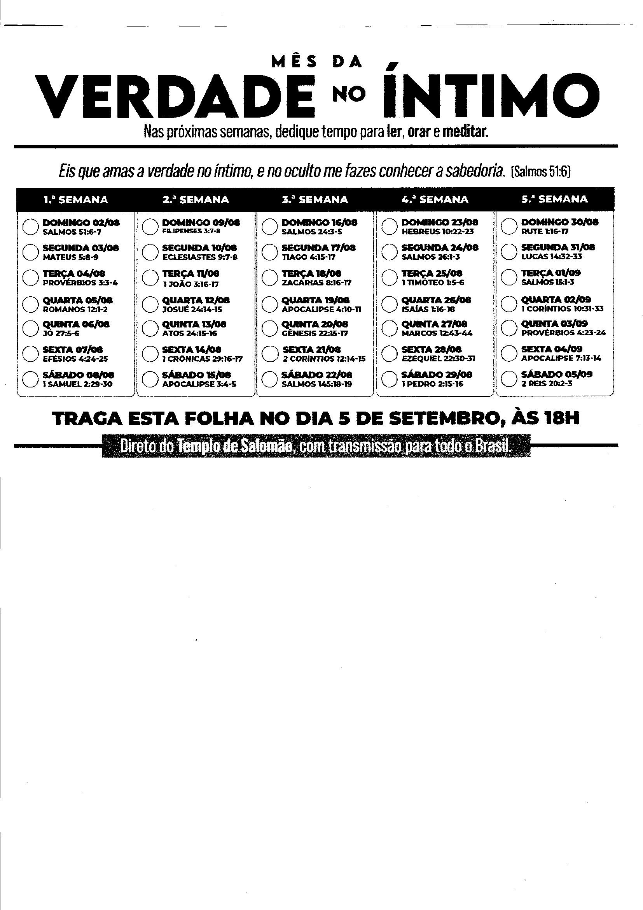

Selecione um plano abaixo para acompanhar suas leituras e edificar seu dia a dia.

Plano de leitura bíblica diário com cronograma e acompanhamento das escrituras.
Plano diário: "...A quem muito foi dado, muito será exigido; e a quem muito foi confiado, muito mais será pedido."